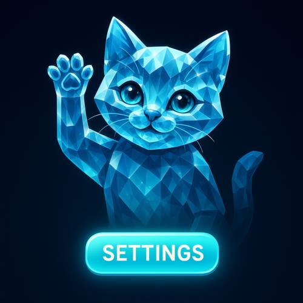
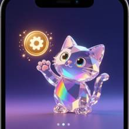
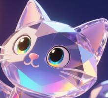

Compound — On an App guide page, a kitten made of crystal had a curious expressio
On an App guide page, a kitten made of crystal had a curious expression and waved its paw to light up a glowing settings button in the air.

Direct — one call, no iterationContinuum — Qwen3.8-27B + Qwen-Image
Judge — Direct
PASSCompound - Imagination — The image depicts a kitten figure whose body is composed of numerous blue, geometric facets, resembling a sculpture made of crystal. This is a fantastical concept not found in reality.
FAILAction - Non-contact Interaction — The image shows a kitten with a raised paw near a glowing 'SETTINGS' button. However, the static nature of the image does not depict the action of the kitten's wave causing the button to light up; it only shows the two elements simultaneously.
PASSAttribute - Expression — The kitten has large, wide-open eyes with large pupils, and its head is slightly tilted, which together convey a curious expression.
PASSAttribute - Material — The kitten's entire body is rendered with a faceted texture that reflects light, giving it the appearance of being made from blue crystal.
PASSAction - Hand (Character/Anthropomorphic) — The kitten's right front paw is raised in the air with the paw pad visible, clearly performing a waving action.
Judge — Continuum
PASSCompound - Imagination — The image depicts a kitten figure whose body is constructed from transparent, faceted material, consistent with the imaginative concept of a kitten made of crystal.
PASSAction - Non-contact Interaction — The kitten has one paw raised in a waving motion towards a glowing button with a gear icon. The button is brightly lit and surrounded by sparkles, visually suggesting the kitten's action is causing it to light up.
PASSAttribute - Expression — The kitten has large, wide eyes and a slight smile. This combination of features gives it an alert and interested look, which can be interpreted as a curious expression.
PASSAttribute - Material — The kitten's body is rendered with transparent, faceted surfaces that refract light, creating rainbow-like patterns. This appearance successfully mimics the material properties of crystal.
PASSAction - Hand (Character/Anthropomorphic) — The kitten's front paw is raised in a waving gesture. The paw is clearly depicted with four toe pads and a central pad, and its structure is anatomically correct for a cartoon feline without any distortion.
What the agent did
Thinking
Let's understand the prompt: "In the app's guide page, a crystal-made kitten had a curious expression and waved its paw to illuminate a glowing settings button in the air." So this is a mobile app guide/onboarding page. A kitten made of crystal (translucent, refracting light), curious expression, waving a paw, and the glow of that paw illuminates a glowing settings button (gear icon) floating in the air. Since this is an app guide page, it should look like a UI screen — probably a vertical mobile aspect ratio, but… the image size is fixed by the harness. I shouldn't specify the size (the harness controls it). Let's just generate with a good prompt. Let's fill in the visual details: a crystal kitten (glass/crystal texture, iridescent refractions, faceted), curious expression (wide eyes, tilted head, perked ears), waving one paw up, and in the air there's a floating glowing settings gear button, illuminated by the cat's paw — light particles, sparkles between the paw and the button. The app guide page background: soft gradient UI background, maybe minimal UI elements like dots at the bottom (onboarding page indicator) or a "Get Started" button — but the prompt only says "app guide page." I can include subtle UI hints like page dots. Careful not to add rendered text that could be misspelled. Avoid text as much as possible, or use minimal UI elements like page indicator dots. The prompt doesn't ask for text, so I'll keep text out to avoid spelling issues. Composition: portrait? The harness controls the size, and I can't set the size ("image size is fixed for comparison" — actually, for generation it says "size and seed are controlled by the harness," so I shouldn't pass width/height). OK. Prompt: "Mobile app onboarding guide screen, a cute kitten made of translucent faceted crystal standing, curious expression with wide sparkling eyes and head tilted, one front paw raised waving, glowing softly, above/next to it a glowing circular settings button with a gear icon floating in the air, the button illuminated and glowing brightly, tiny light particles and sparkles connecting the paw to the button, soft pastel gradient background (deep blue-purple night or soft cream?), clean minimal UI, page indicator dots at the bottom, 3D render style, soft studio lighting, glossy, high quality." For an app guide page, a dark elegant background with a glowing button would look beautiful, or a light pastel background. Let's go with a soft gradient background — deep indigo/violet with a subtle glow would make the glowing button pop. But crystal kittens are often depicted on soft backgrounds. Let's choose a dark twilight gradient (deep blue to purple) so the glow of the settings button reads clearly. Let's generate. Next, inspect: check the kitten's expression (curious), the waving paw, the glowing settings gear button, and the app guide page context (UI). Then edit as needed. Let's make the first generation call.
Step 1 — `generate_image`
{
"prompt": "A mobile app onboarding guide screen: a cute kitten sculpted from translucent faceted crystal, glowing softly from within with iridescent rainbow refractions, wide curious sparkling eyes, head tilted in curiosity, one front paw raised in a waving gesture. In the air just above the paw, a glowing circular settings button with a bright gear icon floats, radiating warm golden light, lit up and shimmering, with tiny light particles and sparkles drifting between the paw and the button. Dark indigo-to-violet gradient background, clean minimal UI with small page-indicator dots near the bottom, 3D render, soft cinematic lighting, glossy crystal material, high detail, adorable character design.",
"model": "qwen-image"
}
Result img_0

Thinking
The result is very good. Let me verify: - Kitten made of crystal: Yes, a faceted translucent crystal kitten with rainbow refractions. ✓ - Curious expression: Wide eyes, head tilted, whiskers — looks curious. ✓ - Waving a front paw: Yes, one front paw raised, appearing to wave. ✓ - Glowing settings button in the air: Yes, a glowing golden gear button floating in the air, with sparkles. ✓ - App guide page: Shown on a smartphone screen with page indicator dots at the bottom. ✓ Small check: the front paw looks like it's touching the button — "waving a front paw to light up a glowing settings button" — in the image the button is right next to the raised front paw, lit up and glowing with sparkles. This matches well. To confirm the eyes are good and there are no artifacts, let me examine the face a bit more closely. I'll inspect the kitten's face region and the button region.
Model
The first result looks very close to the prompt. Let me verify the details at full resolution — the face/expression and the glowing settings button.
Step 2 — `inspect_region`
{
"image": "img_0",
"roi": "the crystal kitten's face"
}
Result img_1

Step 3 — `inspect_region`
{
"image": "img_0",
"roi": "the glowing settings button"
}
Thinking
The face looks great — curious wide-open eyes, crystal facets, pink nose. The text ROI of the button failed. I'll try inspecting the button using a rectangle instead. The button is in the upper-left area, roughly x from 150 to 330, y from 210 to 390 (image is 768x768). Let me try using the rectangle [140, 200, 350, 400].
Model
Face is excellent — curious wide eyes, tilted crystal facets. Let me check the button with a rectangular crop.
The settings button is a glowing golden circular button, with a gear icon and a ring of light, and it's emitting sparkles — exactly as described in the prompt. Everything matches: - App guide page: a smartphone screen with page indicator dots at the bottom ✓ - A crystal-made kitten ✓ (faceted, translucent, with rainbow refractions) - Curious expression ✓ (wide open eyes, tilted head) - Waving its front paw ✓ (raising a front paw toward the button) - A glowing settings button in the air ✓ (a glowing gear button with light and sparkles) This is a good result. Mark it as the best, then verify the mark before stopping. Actually, the mark check means confirming that the most recently marked image is what I want to return — I haven't edited anything after img_0, so img_0 is the latest. I'll mark img_0.
Model
The button is a clean, glowing golden gear icon ringed with light and sparkles — exactly as described in the prompt. All elements verified: - **App guide page**: rendered as a smartphone screen with onboarding page dots at the bottom ✓ - **Crystal kitten**: translucent faceted body with iridescent rainbow refractions ✓ - **Curious expression**: wide sparkling eyes, tilted head, small smile ✓ - **Waving front paw**: raised toward the button ✓ - **Glowing settings button in the air**: bright golden gear with a glowing ring and drifting sparkles ✓ Marking this as the final result.
Step 5 — `mark_best`
{
"image": "img_0",
"reason": "All prompt elements verified at full resolution: app guide page (phone screen with page dots), crystal faceted kitten with curious expression, waving paw, and glowing gear settings button lit up in the air with sparkles."
}
Thinking
Marked img_0 as the best. No edits have been made since then, so the mark is the latest and correct. I'm done — I'll convey the final summary.
Model
Done! The final image (marked as best) shows the app guide page exactly as described: a faceted crystal kitten with a curious, head-tilted expression raises its glowing paw toward a golden settings gear button floating in the air, which lights up with a glowing ring and drifting sparkles. The scene sits on a phone screen with onboarding page dots, giving it a clear app guide-page feel — no edits were needed beyond verification.